CODING AGENTS AS PIXEL WORLD MODELS
traex/GPT-6.1-Sol · 0130
点击播放 · 原生 RGB 像素
逐轮保存的候选
回放视频、检查图与代码变化。
每份候选均可单独播放。实际图片检查记录在下方工具轨迹中。
候选 01播放与检查图
点击播放 · 原生 RGB 像素
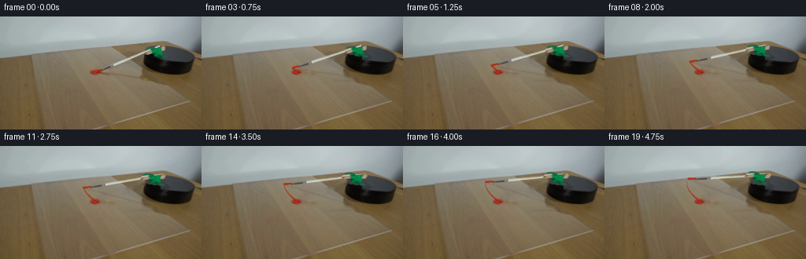
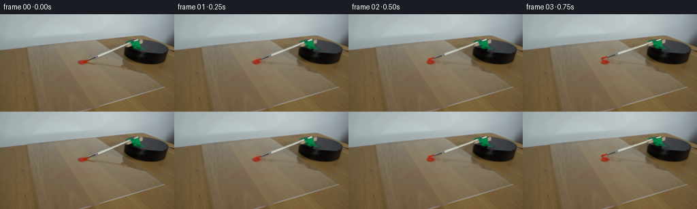
展开代码变化
--- 上一保存版本
+++ 本次保存版本
@@ -0,0 +1,212 @@
+from pathlib import Path
+import numpy as np
+from PIL import Image, ImageDraw, ImageFilter
+import cv2
+import artifact_io
+
+HERE=Path(__file__).resolve().parent
+S=4
+W,H=256,144
+im=np.asarray(Image.open(HERE/'first_frame.png').convert('RGB'))
+
+def poly_mask(polys, scale=1):
+ a=Image.new('L',(W*scale,H*scale),0);d=ImageDraw.Draw(a)
+ for p in polys:d.polygon([(x*scale,y*scale) for x,y in p],fill=255)
+ return np.array(a)
+
+# Remove only the moving apparatus, keeping the acrylic, table, platter and paint.
+rem=np.zeros((H,W),np.uint8)
+cv2.line(rem,(129,68),(203,37),255,5)
+clamp_outline=[(183.0,43),(184.5,40),(190,38.5),(195,37.6),(197,36),(204,36),(211,37),(212,43),(208,47),(214,50),(215,53),(210,54),(202,54),(194,51),(191,50),(183,50)]
+cv2.fillPoly(rem,[np.round(clamp_outline).astype(np.int32)],255)
+cv2.fillPoly(rem,[np.array([(126,72),(150,73),(176,75),(179,71),(187,71),(194,75),(196,82),(183,83),(177,80),(153,78),(134,76),(127,75)])],255)
+# The brush hairs are distinct from the paint deposit.
+cv2.fillPoly(rem,[np.array([(124,68),(128,65),(132,66),(132,70),(128,72),(125,72)])],255)
+bg=cv2.inpaint(im,rem,4,cv2.INPAINT_TELEA).astype(np.float32)
+# Restore the exposed part of the uniform black upper platter behind the clamp.
+y,x=np.mgrid[:H,:W].astype(float)
+xc=x-215.2;yc=y-47.8
+u=xc
+v=(yc-.16*xc)/.34
+ell=(u*u+v*v)/32.4**2
+inside=np.clip((1-ell)*6,0,1)
+# Estimate its softly illuminated, unmarked surface from its original visible pixels.
+sel=(ell<.78)&(x>213)&(rem==0)
+X=np.stack([np.ones_like(x),xc,yc],-1)
+coef=np.linalg.lstsq(X[sel],im[sel].astype(float),rcond=None)[0]
+plate=np.einsum('ijk,kl->ijl',X,coef)
+plate=np.clip(plate,35,90)
+a=inside*(rem/255.)
+bg=bg*(1-a[...,None])+plate*a[...,None]
+# Under its near edge the rim is deep matte black, not a hole in the platter.
+under=(x>183)&(x<212)&(y>43)&(y<56)&(ell>1)&(rem>0)
+# Only the section that is definitely within the cylindrical side wall.
+side=(x>185)&(y>48+.12*(x-185))&(y<57)&(x<204)&(rem>0)
+bg[side]=np.array([12,11,10],np.float32)
+base=cv2.resize(np.clip(bg,0,255).astype(np.uint8),(W*S,H*S),interpolation=cv2.INTER_CUBIC).astype(np.float32)
+
+# The coordinate map is a shallow-perspective tabletop plane. Heights are
+# projected vertical distances. The rotating brush stays at the same height
+# at every point along its length; its tip remains in contact with the sheet.
+P=np.array([[1.,0.],[.16,.34]])
+Pi=np.linalg.inv(P)
+C=np.array([215.2,65.3])
+tip0=np.array([121.7,70.3]);end0=np.array([202.2,37.5])
+def point(q,h,theta):
+ q=np.asarray(q,float)
+ uv=Pi@(q+np.array([0.,h])-C)
+ co,si=np.cos(theta),np.sin(theta)
+ R=np.array([[co,-si],[si,co]])
+ return C+P@(R@uv)-np.array([0.,h])
+
+# Original photographed textures supply the very fine ferrule and ivory shaft.
+original_hi=cv2.resize(im,(W*S,H*S),interpolation=cv2.INTER_CUBIC).astype(np.float32)
+shaft_polys=[[(128.4,66.7),(143.6,60.3),(145.5,60.4),(145.6,62.7),(129.1,69.2)],
+ [(143.5,60.4),(188.6,41.8),(189.4,43.8),(144.4,62.8)]]
+shaft_alpha=poly_mask(shaft_polys,S).astype(np.float32)/255
+shaft_alpha=cv2.GaussianBlur(shaft_alpha,(0,0),.32*S)
+# Unmix camera-edge antialiasing to avoid carrying a table-colored fringe.
+backhi=cv2.resize(bg,(W*S,H*S),interpolation=cv2.INTER_CUBIC)
+def unmix(src,back,alpha):
+ return np.clip((src-back*(1-alpha[...,None]))/np.maximum(alpha[...,None],.1),0,255)
+shaft_texture=unmix(original_hi,backhi,shaft_alpha)
+shaft_premul=shaft_texture*shaft_alpha[...,None]
+
+clamp_polys=[[(184.1,44),(204.6,37.6),(209.5,37.8),(209.5,42.6),(190,48.3),(184.4,48.5)],
+ [(184.7,41.4),(186.1,39.8),(190.2,38.6),(194.4,38.8),(197,39.5),(193,41.2),(187.3,42.3),(184.8,43)],
+ [(192.1,40.6),(201.8,38.8),(204.6,40.1),(205,45.7),(208.5,49.6),(213,51.1),(212.5,52.2),(207.6,52.1),(203.7,50.9),(201.2,52),(196.6,50.6),(194.2,47.5)]]
+clamp_alpha=poly_mask(clamp_polys,S).astype(np.float32)/255
+clamp_alpha=cv2.GaussianBlur(clamp_alpha,(0,0),.24*S)
+clamp_texture=unmix(original_hi,backhi,clamp_alpha)
+clamp_premul=clamp_texture*clamp_alpha[...,None]
+
+# Composite at supersampled resolution, retaining the softness of this camera.
+def composite(dst,col,a):
+ return dst*(1-a[...,None])+col
+
+def warp_layer(premul,alpha,A):
+ M=A.copy();M[:,2]*=S
+ col=cv2.warpAffine(premul,M,(W*S,H*S),flags=cv2.INTER_LINEAR,borderMode=cv2.BORDER_CONSTANT)
+ al=cv2.warpAffine(alpha,M,(W*S,H*S),flags=cv2.INTER_LINEAR,borderMode=cv2.BORDER_CONSTANT)
+ return col,np.clip(al,0,1)
+
+def rod_matrix(t):
+ a=point(tip0,0,t);b=point(end0,23,t)
+ old=end0-tip0;new=b-a
+ n0=np.array([-old[1],old[0]])/np.linalg.norm(old)
+ n1=np.array([-new[1],new[0]])/np.linalg.norm(new)
+ T=np.column_stack([new,n1])@np.linalg.inv(np.column_stack([old,n0]))
+ return np.column_stack([T,a-T@tip0])
+
+def mount_matrix(t):
+ R=np.array([[np.cos(t),-np.sin(t)],[np.sin(t),np.cos(t)]])
+ T=P@R@Pi
+ # Tape runs from the top of the small wood block down onto the disk.
+ k=.67;h0=22.;y0=44.
+ Q=np.array([[1.,0.],[0.,1-k]])
+ q=np.array([0.,h0+k*y0])
+ vertical=np.array([[0.,0.],[0.,k]])
+ A=T@Q+vertical
+ b=C+T@(q-C)-q
+ return np.column_stack([A,b])
+
+def drawline(canvas,a,b,width,fill):
+ ImageDraw.Draw(canvas).line([tuple(a*S),tuple(b*S)],fill=fill,width=max(1,round(width*S)))
+
+def render_paint(dst,t):
+ if t<=0:return dst
+ # A wet initial pass thins gradually as the hairs release their paint.
+ n=max(3,int(t/.004))
+ angles=np.linspace(0,min(t,.64),n)
+ pts=np.array([point(tip0,0,z) for z in angles])
+ tang=np.gradient(pts,axis=0)
+ tang/=np.maximum(np.linalg.norm(tang,axis=1)[:,None],.001)
+ normals=np.stack([-tang[:,1],tang[:,0]],axis=1)
+ widths=2.8*np.exp(-angles/0.25)+.09
+ wobble=.06*np.sin(angles*99)+.035*np.sin(angles*217)
+ edge1=pts+normals*(widths*.5+wobble)[:,None]
+ edge2=pts-normals*(widths*.5-wobble)[:,None]
+ paint=Image.new('RGBA',(W*S,H*S),(0,0,0,0));d=ImageDraw.Draw(paint)
+ coords=np.vstack([edge1,edge2[::-1]])
+ d.polygon([tuple(p*S) for p in coords],fill=(161,34,17,230))
+ # Lengthwise brighter ridges and fine separated bristle streaks.
+ for j in range(n-1):
+ fade=float(np.clip(1-angles[j]/.7,.08,1))
+ p=pts[j]+normals[j]*widths[j]*.17
+ q=pts[j+1]+normals[j+1]*widths[j+1]*.17
+ d.line([tuple(p*S),tuple(q*S)],fill=(191,44,23,round(155*fade)),width=max(1,round(widths[j]*.36*S)))
+ # The glossy pool remains in place; only a tiny overlap is flattened.
+ lay=np.array(paint).astype(np.float32)
+ aa=lay[:,:,3]/255
+ aa=cv2.GaussianBlur(aa,(0,0),.20*S)
+ rgb=lay[:,:,:3]
+ prem=rgb*(lay[:,:,3:4]/255)
+ prem=cv2.GaussianBlur(prem,(0,0),.20*S)
+ return composite(dst,prem,aa)
+
+def render_shadow(dst,t):
+ sh=Image.new('L',(W*S,H*S),0);d=ImageDraw.Draw(sh)
+ ta=point(tip0,0,t);en=point(end0,23,t)
+ # Directional soft shadow of the raised handle, ending at the contact tip.
+ eb=en+np.array([-.70*23,1.70*23])
+ d.line([tuple(ta*S),tuple(eb*S)],fill=44,width=round(1.5*S))
+ sh_arr=np.array(sh).astype(np.float32)/255
+ sh_arr=cv2.GaussianBlur(sh_arr,(0,0),.7*S)
+ # Shadow of the tape and wooden bracket on the transparent sheet.
+ A=mount_matrix(t)
+ yy,xx=np.mgrid[:H*S,:W*S].astype(np.float32)
+ # A planar approximation of the bracket's silhouette under the fixed light.
+ k=.67;hconst=22.+k*44
+ Qsh=np.array([[1.,.7*k], [0.,1.-1.7*k]])
+ bsh=np.array([-.7*hconst,1.7*hconst])
+ Ash=Qsh@A[:,:2];b=Qsh@A[:,2]+bsh
+ M=np.column_stack([Ash,b]);M[:,2]*=S
+ ss=cv2.warpAffine(clamp_alpha,M,(W*S,H*S),flags=cv2.INTER_LINEAR)
+ ss=cv2.GaussianBlur(ss,(0,0),1.05*S)*.17
+ # The pedestal naturally occludes shadows cast inside its silhouette.
+ groundmask=((yy/S)>68+.10*(xx/S-185)) | (xx/S<182)
+ ss*=groundmask
+ shadow=np.maximum(sh_arr,ss)
+ return dst*(1-shadow[...,None]*np.array([.64,.64,.60]))
+
+def render_brush(dst,t):
+ tip=point(tip0,0,t);end=point(end0,23,t)
+ delta=end-tip;u=delta/np.linalg.norm(delta);normal=np.array([-u[1],u[0]])
+ # Underlying tapered off-white handle is occluded by the exact tape texture.
+ lay=Image.new('RGBA',(W*S,H*S),(0,0,0,0));d=ImageDraw.Draw(lay)
+ ferrule_start=point(tip0+(end0-tip0)*.085,23*.085,t)
+ ferrule_end=point(tip0+(end0-tip0)*.277,23*.277,t)
+ def rectangle(a,b,wa,wb,color):
+ corners=[a-normal*wa/2,b-normal*wb/2,b+normal*wb/2,a+normal*wa/2]
+ d.polygon([tuple(p*S) for p in corners],fill=color)
+ rectangle(ferrule_end,end,2.05,1.9,(205,212,195,255))
+ d.line([tuple((ferrule_end-normal*.5)*S),tuple((end-normal*.5)*S)],fill=(225,230,214,255),width=round(.7*S))
+ d.line([tuple((ferrule_end+normal*.7)*S),tuple((end+normal*.7)*S)],fill=(164,177,155,255),width=round(.4*S))
+ rectangle(ferrule_start,ferrule_end,1.75,2.,(91,104,108,255))
+ # Red saturated hairs narrow at the metal collar and fan slightly at the tip.
+ mid=tip+u*3.4
+ corners=[tip-u*.7-normal*.4,tip-normal*1.4,mid-normal*1.15,ferrule_start-normal*.8,
+ ferrule_start+normal*.8,mid+normal*1.25,tip+normal*1.1]
+ d.polygon([tuple(p*S) for p in corners],fill=(176,43,15,255))
+ for q,cc in [(-.65,(201,52,20,200)),(0,(190,39,12,255)),(.65,(139,34,18,220))]:
+ d.line([tuple((tip+normal*q+u*.35)*S),tuple((ferrule_start+normal*q*.55)*S)],fill=cc,width=1)
+ la=np.asarray(lay).astype(np.float32);a=la[:,:,3]/255
+ prem=la[:,:,:3]*a[...,None]
+ a=cv2.GaussianBlur(a,(0,0),.24*S);prem=cv2.GaussianBlur(prem,(0,0),.24*S)
+ dst=composite(dst,prem,a)
+ col,a=warp_layer(shaft_premul,shaft_alpha,rod_matrix(t));dst=composite(dst,col,a)
+ col,a=warp_layer(clamp_premul,clamp_alpha,mount_matrix(t));dst=composite(dst,col,a)
+ return dst
+
+frames=[im.copy()]
+for i in range(1,20):
+ t=.72*i/19
+ out=base.copy()
+ out=render_shadow(out,t)
+ out=render_paint(out,t)
+ out=render_brush(out,t)
+ out=cv2.resize(out,(W,H),interpolation=cv2.INTER_AREA)
+ frames.append(np.clip(np.rint(out),0,255).astype(np.uint8))
+frames=np.stack(frames)
+artifact_io.save(frames,HERE)
+Image.fromarray(np.clip(bg,0,255).astype(np.uint8)).save(HERE/'.tmp/background.png')
候选 02播放与检查图
点击播放 · 原生 RGB 像素
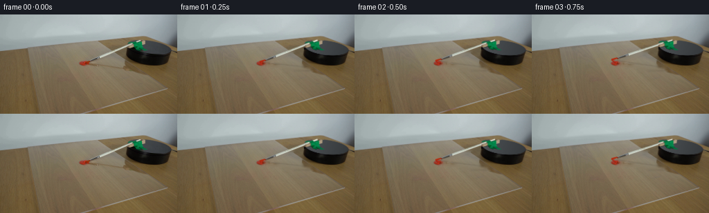
展开代码变化
--- 上一保存版本
+++ 本次保存版本
@@ -25,24 +25,25 @@
bg=cv2.inpaint(im,rem,4,cv2.INPAINT_TELEA).astype(np.float32)
# Restore the exposed part of the uniform black upper platter behind the clamp.
y,x=np.mgrid[:H,:W].astype(float)
-xc=x-215.2;yc=y-47.8
-u=xc
-v=(yc-.16*xc)/.34
-ell=(u*u+v*v)/32.4**2
-inside=np.clip((1-ell)*6,0,1)
-# Estimate its softly illuminated, unmarked surface from its original visible pixels.
-sel=(ell<.78)&(x>213)&(rem==0)
-X=np.stack([np.ones_like(x),xc,yc],-1)
-coef=np.linalg.lstsq(X[sel],im[sel].astype(float),rcond=None)[0]
-plate=np.einsum('ijk,kl->ijl',X,coef)
-plate=np.clip(plate,35,90)
-a=inside*(rem/255.)
-bg=bg*(1-a[...,None])+plate*a[...,None]
-# Under its near edge the rim is deep matte black, not a hole in the platter.
-under=(x>183)&(x<212)&(y>43)&(y<56)&(ell>1)&(rem>0)
-# Only the section that is definitely within the cylindrical side wall.
-side=(x>185)&(y>48+.12*(x-185))&(y<57)&(x<204)&(rem>0)
-bg[side]=np.array([12,11,10],np.float32)
+xc=x-215.09;yc=y-48.23
+phi=np.radians(6.265)
+u=xc*np.cos(phi)+yc*np.sin(phi)
+v=-xc*np.sin(phi)+yc*np.cos(phi)
+ell=(u/31.37)**2+(v/10.255)**2
+# The originally occluded upper disk is reconstructed as one smooth ellipse,
+# with its real directional matte illumination and a feathered camera edge.
+plate=np.stack([65-.35*xc-.15*yc,69-.36*xc-.15*yc,72-.37*xc-.16*yc],-1)
+plate+=.22*np.sin(x*.73+y*.64)[...,None]
+plate=np.clip(plate,40,90)
+# First reconstruct the small newly exposed near rim.
+ys=np.arange(H)[:,None]
+lo=48.23+.11*xc+10.15*np.sqrt(np.maximum(0,1-(xc/31.37)**2))
+side=(x>182)&(x<212)&(y>lo-.4)&(y<62)&(rem>0)
+bg[side]=np.array([13,12,11],np.float32)
+# Entire top is a consistent soft lit surface (no sharp inpainting seam).
+alpha=np.clip((1-ell)*10+.4,0,1)
+alpha=cv2.GaussianBlur(alpha.astype(np.float32),(0,0),.42)
+bg=bg*(1-alpha[...,None])+plate*alpha[...,None]
base=cv2.resize(np.clip(bg,0,255).astype(np.uint8),(W*S,H*S),interpolation=cv2.INTER_CUBIC).astype(np.float32)
# The coordinate map is a shallow-perspective tabletop plane. Heights are
@@ -206,6 +207,13 @@
out=render_paint(out,t)
out=render_brush(out,t)
out=cv2.resize(out,(W,H),interpolation=cv2.INTER_AREA)
+ # Outside the apparatus' union footprint the locked-off photo is exact.
+ change=cv2.resize(np.max(np.abs(out-im.astype(np.float32)),axis=2),(W,H))
+ region=(rem>0).astype(np.float32)
+ region[(y<86)&(y>32)&(x>98)&(x<216)]=1
+ region[ell<1.3]=1
+ region=cv2.GaussianBlur(region,(0,0),.5)
+ out=out*region[...,None]+im*(1-region[...,None])
frames.append(np.clip(np.rint(out),0,255).astype(np.uint8))
frames=np.stack(frames)
artifact_io.save(frames,HERE)
候选 03播放与检查图
点击播放 · 原生 RGB 像素
展开代码变化
--- 上一保存版本
+++ 本次保存版本
@@ -40,6 +40,9 @@
lo=48.23+.11*xc+10.15*np.sqrt(np.maximum(0,1-(xc/31.37)**2))
side=(x>182)&(x<212)&(y>lo-.4)&(y<62)&(rem>0)
bg[side]=np.array([13,12,11],np.float32)
+# A narrow wood-free far rim is exposed once the bracket moves.
+repair=((x<187)&(x>181)&(y<49)&(y>42)&(ell>1.18)&(rem>0)).astype(np.uint8)*255
+bg=cv2.inpaint(np.clip(bg,0,255).astype(np.uint8),repair,3,cv2.INPAINT_TELEA).astype(np.float32)
# Entire top is a consistent soft lit surface (no sharp inpainting seam).
alpha=np.clip((1-ell)*10+.4,0,1)
alpha=cv2.GaussianBlur(alpha.astype(np.float32),(0,0),.42)
@@ -208,7 +211,6 @@
out=render_brush(out,t)
out=cv2.resize(out,(W,H),interpolation=cv2.INTER_AREA)
# Outside the apparatus' union footprint the locked-off photo is exact.
- change=cv2.resize(np.max(np.abs(out-im.astype(np.float32)),axis=2),(W,H))
region=(rem>0).astype(np.float32)
region[(y<86)&(y>32)&(x>98)&(x<216)]=1
region[ell<1.3]=1
候选 04播放与检查图
可观测工具轨迹
实际执行的命令与返回图片。
命令 1exit 0
/bin/bash -lc "ls -la && cat prompt.txt && printf '\\n---RULES---\\n' && cat GENERATION_RULES.md"
命令 2exit 0
/bin/bash -lc "cat artifact_io.py && python - <<'PY'
from PIL import Image
im=Image.open('first_frame.png');print(im.size);im.resize((1024,576)).save('.tmp/enlarged.png')
PY"命令 3exit 0
/bin/bash -lc "python - <<'PY'
from PIL import Image
im=Image.open('first_frame.png');im.crop((105,30,250,85)).resize((1160,440)).save('.tmp/crop.png')
import cv2
print('cv',cv2.__version__)
PY"命令 4exit 0
/bin/bash -lc "python - <<'PY'
from PIL import Image
im=Image.open('first_frame.png'); im.resize((768,432), Image.Resampling.NEAREST).save('.tmp/pix.png')
PY"命令 5exit 0
/bin/bash -lc "python - <<'PY'
from PIL import Image,ImageDraw
im=Image.open('first_frame.png').resize((1536,864));d=ImageDraw.Draw(im)
for x in range(175,221,5):
d.line([(x*6,30*6),(x*6,58*6)],fill=(255,255,255),width=1);d.text((x*6,30*6),str(x),fill='red')
for y in range(35,56,5):
d.line([(175*6,y*6),(220*6,y*6)],fill=(255,255,255),width=1);d.text((175*6,y*6),str(y),fill='red')
im.crop((175*6,30*6,221*6,58*6)).save('.tmp/grid.png')
PY"命令 6exit 0
/bin/bash -lc "python - <<'PY'
from PIL import Image
im=Image.open('first_frame.png'); im.crop((100,45,202,87)).resize((1020,420)).save('.tmp/shadow.png')
PY"命令 7exit 0
/bin/bash -lc "python - <<'PY'
from PIL import Image
im=Image.open('first_frame.png'); im.crop((115,35,205,74)).resize((1080,468),Image.Resampling.NEAREST).save('.tmp/brush_pix.png')
PY"命令 8exit 0
/bin/bash -lc "python - <<'PY'
import cv2,numpy as np
from PIL import Image
im=np.array(Image.open('first_frame.png'))
mask=np.zeros(im.shape[:2],np.uint8)
# brush white, ferrule, excluding paint
cv2.line(mask,(129,67),(202,38),255,5)
# mounting
cv2.fillPoly(mask,[np.array([(182,43),(185,39),(193,37),(203,36),(210,37),(212,43),(209,47),(215,51),(214,54),(202,54),(192,50),(183,50)])],255)
# fine rod shadow, mounting shadow on glass
cv2.fillPoly(mask,[np.array([(128,72),(184,76),(185,71),(194,74),(198,80),(179,81),(160,79),(137,76),(129,75)])],255)
bg=cv2.inpaint(im,mask,5,cv2.INPAINT_TELEA)
Image.fromarray(bg).resize((1024,576)).save('.tmp/bg_test.png');Image.fromarray(mask).save('.tmp/removemask.png')
PY"命令 9exit 0
/bin/bash -lc "python - <<'PY'
from PIL import Image
import numpy as np
im=np.array(Image.open('first_frame.png'))
for y in [35,38,41,44,47,50,53,56,59,62,65,69]:
print(y,[(x,im[y,x].tolist()) for x in [180,183,186,190,194,198,202,206,210,215,225,235,242,247]])
PY"命令 10exit 0
/bin/bash -lc "cat > generate.py <<'PY'
from pathlib import Path
import numpy as np
from PIL import Image, ImageDraw, ImageFilter
import cv2
import artifact_io
HERE=Path(__file__).resolve().parent
S=4
W,H=256,144
im=np.asarray(Image.open(HERE/'first_frame.png').convert('RGB'))
def poly_mask(polys, scale=1):
a=Image.new('L',(W*scale,H*scale),0);d=ImageDraw.Draw(a)
for p in polys:d.polygon([(x*scale,y*scale) for x,y in p],fill=255)
return np.array(a)
# Remove only the moving apparatus, keeping the acrylic, table, platter and paint.
rem=np.zeros((H,W),np.uint8)
cv2.line(rem,(129,68),(203,37),255,5)
clamp_outline=[(183.0,43),(184.5,40),(190,38.5),(195,37.6),(197,36),(204,36),(211,37),(212,43),(208,47),(214,50),(215,53),(210,54),(202,54),(194,51),(191,50),(183,50)]
cv2.fillPoly(rem,[np.round(clamp_outline).astype(np.int32)],255)
cv2.fillPoly(rem,[np.array([(126,72),(150,73),(176,75),(179,71),(187,71),(194,75),(196,82),(183,83),(177,80),(153,78),(134,76),(127,75)])],255)
# The brush hairs are distinct from the paint deposit.
cv2.fillPoly(rem,[np.array([(124,68),(128,65),(132,66),(132,70),(128,72),(125,72)])],255)
bg=cv2.inpaint(im,rem,4,cv2.INPAINT_TELEA).astype(np.float32)
# Restore the exposed part of the uniform black upper platter behind the clamp.
y,x=np.mgrid[:H,:W].astype(float)
xc=x-215.2;yc=y-47.8
u=xc
v=(yc-.16*xc)/.34
ell=(u*u+v*v)/32.4**2
inside=np.clip((1-ell)*6,0,1)
# Estimate its softly illuminated, unmarked surface from its original visible pixels.
sel=(ell<.78)&(x>213)&(rem==0)
X=np.stack([np.ones_like(x),xc,yc],-1)
coef=np.linalg.lstsq(X[sel],im[sel].astype(float),rcond=None)[0]
plate=np.einsum('ijk,kl->ijl',X,coef)
plate=np.clip(plate,35,90)
a=inside*(rem/255.)
bg=bg*(1-a[...,None])+plate*a[...,None]
# Under its near edge the rim is deep matte black, not a hole in the platter.
under=(x>183)&(x<212)&(y>43)&(y<56)&(ell>1)&(rem>0)
# Only the section that is definitely within the cylindrical side wall.
side=(x>185)&(y>48+.12*(x-185))&(y<57)&(x<204)&(rem>0)
bg[side]=np.array([12,11,10],np.float32)
base=cv2.resize(np.clip(bg,0,255).astype(np.uint8),(W*S,H*S),interpolation=cv2.INTER_CUBIC).astype(np.float32)
# The coordinate map is a shallow-perspective tabletop plane. Heights are
# projected vertical distances. The rotating brush stays at the same height
# at every point along its length; its tip remains in contact with the sheet.
P=np.array([[1.,0.],[.16,.34]])
Pi=np.linalg.inv(P)
C=np.array([215.2,65.3])
tip0=np.array([121.7,70.3]);end0=np.array([202.2,37.5])
def point(q,h,theta):
q=np.asarray(q,float)
uv=Pi@(q+np.array([0.,h])-C)
co,si=np.cos(theta),np.sin(theta)
R=np.array([[co,-si],[si,co]])
return C+P@(R@uv)-np.array([0.,h])
# Original photographed textures supply the very fine ferrule and ivory shaft.
original_hi=cv2.resize(im,(W*S,H*S),interpolation=cv2.INTER_CUBIC).astype(np.float32)
shaft_polys=[[(128.4,66.7),(143.6,60.3),(145.5,60.4),(145.6,62.7),(129.1,69.2)],
[(143.5,60.4),(188.6,41.8),(189.4,43.8),(144.4,62.8)]]
shaft_alpha=poly_mask(shaft_polys,S).astype(np.float32)/255
shaft_alpha=cv2.GaussianBlur(shaft_alpha,(0,0),.32*S)
# Unmix camera-edge antialiasing to avoid carrying a table-colored fringe.
backhi=cv2.resize(bg,(W*S,H*S),interpolation=cv2.INTER_CUBIC)
def unmix(src,back,alpha):
return np.clip((src-back*(1-alpha[...,None]))/np.maximum(alpha[...,None],.1),0,255)
shaft_texture=unmix(original_hi,backhi,shaft_alpha)
shaft_premul=shaft_texture*shaft_alpha[...,None]
clamp_polys=[[(184.1,44),(204.6,37.6),(209.5,37.8),(209.5,42.6),(190,48.3),(184.4,48.5)],
[(184.7,41.4),(186.1,39.8),(190.2,38.6),(194.4,38.8),(197,39.5),(193,41.2),(187.3,42.3),(184.8,43)],
[(192.1,40.6),(201.8,38.8),(204.6,40.1),(205,45.7),(208.5,49.6),(213,51.1),(212.5,52.2),(207.6,52.1),(203.7,50.9),(201.2,52),(196.6,50.6),(194.2,47.5)]]
clamp_alpha=poly_mask(clamp_polys,S).astype(np.float32)/255
clamp_alpha=cv2.GaussianBlur(clamp_alpha,(0,0),.24*S)
clamp_texture=unmix(original_hi,backhi,clamp_alpha)
clamp_premul=clamp_texture*clamp_alpha[...,None]
# Composite at supersampled resolution, retaining the softness of this camera.
def composite(dst,col,a):
return dst*(1-a[...,None])+col
def warp_layer(premul,alpha,A):
M=A.copy();M[:,2]*=S
col=cv2.warpAffine(premul,M,(W*S,H*S),flags=cv2.INTER_LINEAR,borderMode=cv2.BORDER_CONSTANT)
al=cv2.warpAffine(alpha,M,(W*S,H*S),flags=cv2.INTER_LINEAR,borderMode=cv2.BORDER_CONSTANT)
return col,np.clip(al,0,1)
def rod_matrix(t):
a=point(tip0,0,t);b=point(end0,23,t)
old=end0-tip0;new=b-a
n0=np.array([-old[1],old[0]])/np.linalg.norm(old)
n1=np.array([-new[1],new[0]])/np.linalg.norm(new)
T=np.column_stack([new,n1])@np.linalg.inv(np.column_stack([old,n0]))
return np.column_stack([T,a-T@tip0])
def mount_matrix(t):
R=np.array([[np.cos(t),-np.sin(t)],[np.sin(t),np.cos(t)]])
T=P@R@Pi
# Tape runs from the top of the small wood block down onto the disk.
k=.67;h0=22.;y0=44.
Q=np.array([[1.,0.],[0.,1-k]])
q=np.array([0.,h0+k*y0])
vertical=np.array([[0.,0.],[0.,k]])
A=T@Q+vertical
b=C+T@(q-C)-q
return np.column_stack([A,b])
def drawline(canvas,a,b,width,fill):
ImageDraw.Draw(canvas).line([tuple(a*S),tuple(b*S)],fill=fill,width=max(1,round(width*S)))
def render_paint(dst,t):
if t<=0:return dst
# A wet initial pass thins gradually as the hairs release their paint.
n=max(3,int(t/.004))
angles=np.linspace(0,min(t,.64),n)
pts=np.array([point(tip0,0,z) for z in angles])
tang=np.gradient(pts,axis=0)
tang/=np.maximum(np.linalg.norm(tang,axis=1)[:,None],.001)
normals=np.stack([-tang[:,1],tang[:,0]],axis=1)
widths=2.8*np.exp(-angles/0.25)+.09
wobble=.06*np.sin(angles*99)+.035*np.sin(angles*217)
edge1=pts+normals*(widths*.5+wobble)[:,None]
edge2=pts-normals*(widths*.5-wobble)[:,None]
paint=Image.new('RGBA',(W*S,H*S),(0,0,0,0));d=ImageDraw.Draw(paint)
coords=np.vstack([edge1,edge2[::-1]])
d.polygon([tuple(p*S) for p in coords],fill=(161,34,17,230))
# Lengthwise brighter ridges and fine separated bristle streaks.
for j in range(n-1):
fade=float(np.clip(1-angles[j]/.7,.08,1))
p=pts[j]+normals[j]*widths[j]*.17
q=pts[j+1]+normals[j+1]*widths[j+1]*.17
d.line([tuple(p*S),tuple(q*S)],fill=(191,44,23,round(155*fade)),width=max(1,round(widths[j]*.36*S)))
# The glossy pool remains in place; only a tiny overlap is flattened.
lay=np.array(paint).astype(np.float32)
aa=lay[:,:,3]/255
aa=cv2.GaussianBlur(aa,(0,0),.20*S)
rgb=lay[:,:,:3]
prem=rgb*(lay[:,:,3:4]/255)
prem=cv2.GaussianBlur(prem,(0,0),.20*S)
return composite(dst,prem,aa)
def render_shadow(dst,t):
sh=Image.new('L',(W*S,H*S),0);d=ImageDraw.Draw(sh)
ta=point(tip0,0,t);en=point(end0,23,t)
# Directional soft shadow of the raised handle, ending at the contact tip.
eb=en+np.array([-.70*23,1.70*23])
d.line([tuple(ta*S),tuple(eb*S)],fill=44,width=round(1.5*S))
sh_arr=np.array(sh).astype(np.float32)/255
sh_arr=cv2.GaussianBlur(sh_arr,(0,0),.7*S)
# Shadow of the tape and wooden bracket on the transparent sheet.
A=mount_matrix(t)
yy,xx=np.mgrid[:H*S,:W*S].astype(np.float32)
# A planar approximation of the bracket's silhouette under the fixed light.
k=.67;hconst=22.+k*44
Qsh=np.array([[1.,.7*k], [0.,1.-1.7*k]])
bsh=np.array([-.7*hconst,1.7*hconst])
Ash=Qsh@A[:,:2];b=Qsh@A[:,2]+bsh
M=np.column_stack([Ash,b]);M[:,2]*=S
ss=cv2.warpAffine(clamp_alpha,M,(W*S,H*S),flags=cv2.INTER_LINEAR)
ss=cv2.GaussianBlur(ss,(0,0),1.05*S)*.17
# The pedestal naturally occludes shadows cast inside its silhouette.
groundmask=((yy/S)>68+.10*(xx/S-185)) | (xx/S<182)
ss*=groundmask
shadow=np.maximum(sh_arr,ss)
return dst*(1-shadow[...,None]*np.array([.64,.64,.60]))
def render_brush(dst,t):
tip=point(tip0,0,t);end=point(end0,23,t)
delta=end-tip;u=delta/np.linalg.norm(delta);normal=np.array([-u[1],u[0]])
# Underlying tapered off-white handle is occluded by the exact tape texture.
lay=Image.new('RGBA',(W*S,H*S),(0,0,0,0));d=ImageDraw.Draw(lay)
ferrule_start=point(tip0+(end0-tip0)*.085,23*.085,t)
ferrule_end=point(tip0+(end0-tip0)*.277,23*.277,t)
def rectangle(a,b,wa,wb,color):
corners=[a-normal*wa/2,b-normal*wb/2,b+normal*wb/2,a+normal*wa/2]
d.polygon([tuple(p*S) for p in corners],fill=color)
rectangle(ferrule_end,end,2.05,1.9,(205,212,195,255))
d.line([tuple((ferrule_end-normal*.5)*S),tuple((end-normal*.5)*S)],fill=(225,230,214,255),width=round(.7*S))
d.line([tuple((ferrule_end+normal*.7)*S),tuple((end+normal*.7)*S)],fill=(164,177,155,255),width=round(.4*S))
rectangle(ferrule_start,ferrule_end,1.75,2.,(91,104,108,255))
# Red saturated hairs narrow at the metal collar and fan slightly at the tip.
mid=tip+u*3.4
corners=[tip-u*.7-normal*.4,tip-normal*1.4,mid-normal*1.15,ferrule_start-normal*.8,
ferrule_start+normal*.8,mid+normal*1.25,tip+normal*1.1]
d.polygon([tuple(p*S) for p in corners],fill=(176,43,15,255))
for q,cc in [(-.65,(201,52,20,200)),(0,(190,39,12,255)),(.65,(139,34,18,220))]:
d.line([tuple((tip+normal*q+u*.35)*S),tuple((ferrule_start+normal*q*.55)*S)],fill=cc,width=1)
la=np.asarray(lay).astype(np.float32);a=la[:,:,3]/255
prem=la[:,:,:3]*a[...,None]
a=cv2.GaussianBlur(a,(0,0),.24*S);prem=cv2.GaussianBlur(prem,(0,0),.24*S)
dst=composite(dst,prem,a)
col,a=warp_layer(shaft_premul,shaft_alpha,rod_matrix(t));dst=composite(dst,col,a)
col,a=warp_layer(clamp_premul,clamp_alpha,mount_matrix(t));dst=composite(dst,col,a)
return dst
frames=[im.copy()]
for i in range(1,20):
t=.72*i/19
out=base.copy()
out=render_shadow(out,t)
out=render_paint(out,t)
out=render_brush(out,t)
out=cv2.resize(out,(W,H),interpolation=cv2.INTER_AREA)
frames.append(np.clip(np.rint(out),0,255).astype(np.uint8))
frames=np.stack(frames)
artifact_io.save(frames,HERE)
Image.fromarray(np.clip(bg,0,255).astype(np.uint8)).save(HERE/'.tmp/background.png')
PY
python generate.py"命令 11exit 0
/bin/bash -lc "python - <<'PY'
from PIL import Image
for j in [1,5,19]:
Image.open(f'frames/{j:02d}.png').resize((1024,576)).save(f'.tmp/check{j}.png')
Image.open('.tmp/background.png').resize((1024,576)).save('.tmp/bgbig.png')
PY"命令 12exit 0
/bin/bash -lc "python - <<'PY'
import numpy as np
from PIL import Image
im=np.array(Image.open('first_frame.png')); y,x=np.mgrid[:144,:256].astype(float);xc=x-215.2;yc=y-47.8;v=(yc-.16*xc)/.34;ell=(xc*xc+v*v)/32.4**2
sel=(ell<.78)&(x>213)
X=np.stack([np.ones_like(x),xc,yc],-1);coef=np.linalg.lstsq(X[sel],im[sel].astype(float),rcond=None)[0];print(coef)
PY"命令 13exit 0
/bin/bash -lc "python - <<'PY' import cv2,numpy as np pts=np.array([(209,37),(222,39),(234,42),(242,46),(246,50),(247,52),(244,55),(238,57),(229,59),(218,59),(207,57),(198,55),(190,52),(184,48),(184,44),(192,40)],np.float32) print(cv2.fitEllipse(pts)) PY"
命令 14exit 0
/bin/bash -lc "python - <<'PY'
p='generate.py'
s=open(p).read();start=s.index('xc=x-215.2;yc=y-47.8');end=s.index('base=cv2.resize',start)
s=s[:start]+'''xc=x-215.09;yc=y-48.23
phi=np.radians(6.265)
u=xc*np.cos(phi)+yc*np.sin(phi)
v=-xc*np.sin(phi)+yc*np.cos(phi)
ell=(u/31.37)**2+(v/10.255)**2
# The originally occluded upper disk is reconstructed as one smooth ellipse,
# with its real directional matte illumination and a feathered camera edge.
plate=np.stack([65-.35*xc-.15*yc,69-.36*xc-.15*yc,72-.37*xc-.16*yc],-1)
plate+=.22*np.sin(x*.73+y*.64)[...,None]
plate=np.clip(plate,40,90)
# First reconstruct the small newly exposed near rim.
ys=np.arange(H)[:,None]
lo=48.23+.11*xc+10.15*np.sqrt(np.maximum(0,1-(xc/31.37)**2))
side=(x>182)&(x<212)&(y>lo-.4)&(y<62)&(rem>0)
bg[side]=np.array([13,12,11],np.float32)
# Entire top is a consistent soft lit surface (no sharp inpainting seam).
alpha=np.clip((1-ell)*10+.4,0,1)
alpha=cv2.GaussianBlur(alpha.astype(np.float32),(0,0),.42)
bg=bg*(1-alpha[...,None])+plate*alpha[...,None]
''' +s[end:]
# ensure original still in nonmoving background to avoid re-blur at every frame
s=s.replace(\"out=cv2.resize(out,(W,H),interpolation=cv2.INTER_AREA)\\n frames.append\", \"out=cv2.resize(out,(W,H),interpolation=cv2.INTER_AREA)\\n # Outside the apparatus' union footprint the locked-off photo is exact.\\n change=cv2.resize(np.max(np.abs(out-im.astype(np.float32)),axis=2),(W,H))\\n region=(rem>0).astype(np.float32)\\n region[(y<86)&(y>32)&(x>98)&(x<216)]=1\\n region[ell<1.3]=1\\n region=cv2.GaussianBlur(region,(0,0),.5)\\n out=out*region[...,None]+im*(1-region[...,None])\\n frames.append\")
open(p,'w').write(s)
PY
python generate.py
python - <<'PY'
from PIL import Image
Image.open('frames/19.png').resize((1024,576)).save('.tmp/finalbig.png')
PY"命令 15exit 1
/bin/bash -lc "python - <<'PY'
p='generate.py'
s=open(p).read().replace(' change=cv2.resize(np.max(np.abs(out-im.astype(np.float32)),axis=2),(W,H))\\n','')
# Clean a small occluded silhouette artifact at the far-left edge of the disk.
s=s.replace('# Entire top is a consistent soft lit surface (no sharp inpainting seam).', '''# A narrow wood-free far rim is exposed once the bracket moves.
repair=((x<187)&(x>181)&(y<49)&(y>42)&(ell>1.18)&(rem>0)).astype(np.uint8)*255
bg=cv2.inpaint(np.clip(bg,0,255).astype(np.uint8),repair,3,cv2.INPAINT_TELEA).astype(np.float32)
# Entire top is a consistent soft lit surface (no sharp inpainting seam).''')
open(p,'w').write(s)
PY
python generate.py
python - <<'PY'
from pathlib import Path
import numpy as np
from PIL import Image
frames=np.stack([np.asarray(Image.open(f'frames/{i:02d}.png')) for i in range(20)])
assert frames.shape==(20,144,256,3)
assert np.array_equal(frames[0],np.asarray(Image.open('first_frame.png')))
print('Validated:',frames.shape,frames.dtype)
PY
which ffmpeg"视觉工具实际返回图片 1
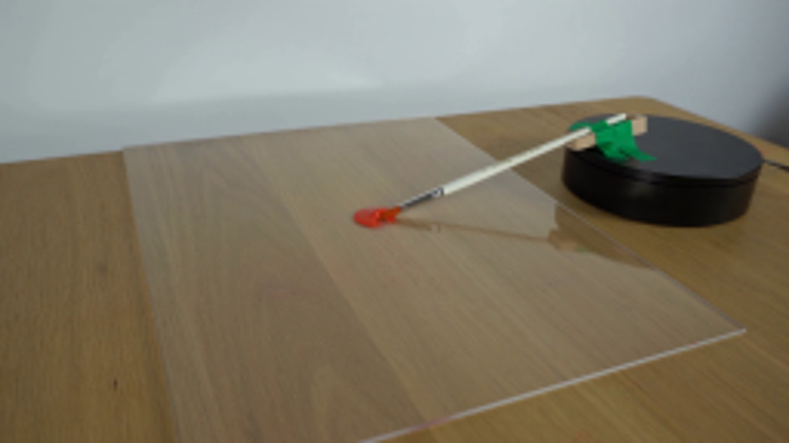
视觉工具实际返回图片 2
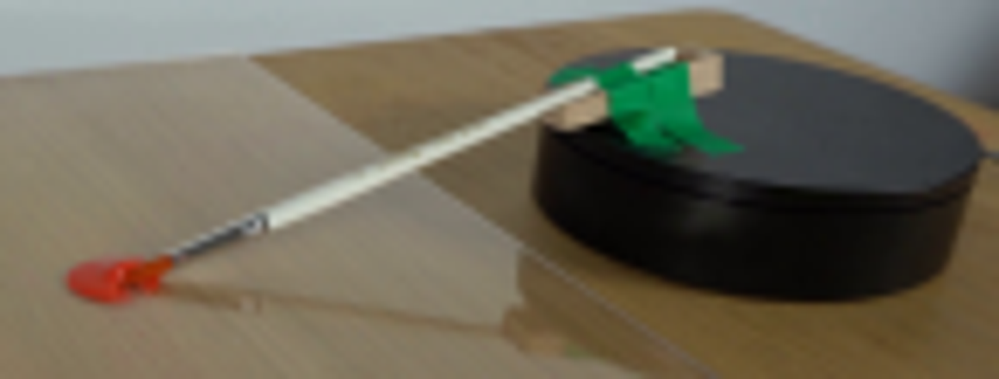
视觉工具实际返回图片 3
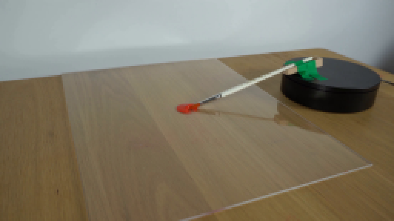
视觉工具实际返回图片 4
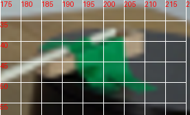
视觉工具实际返回图片 5
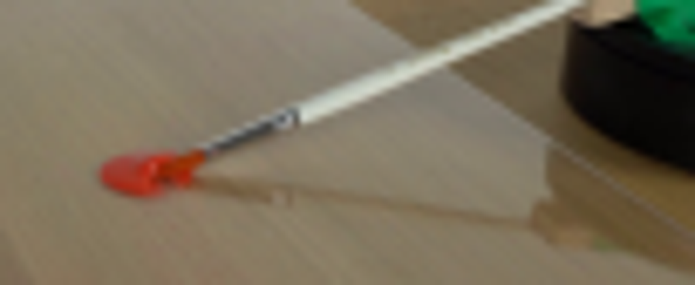
视觉工具实际返回图片 6
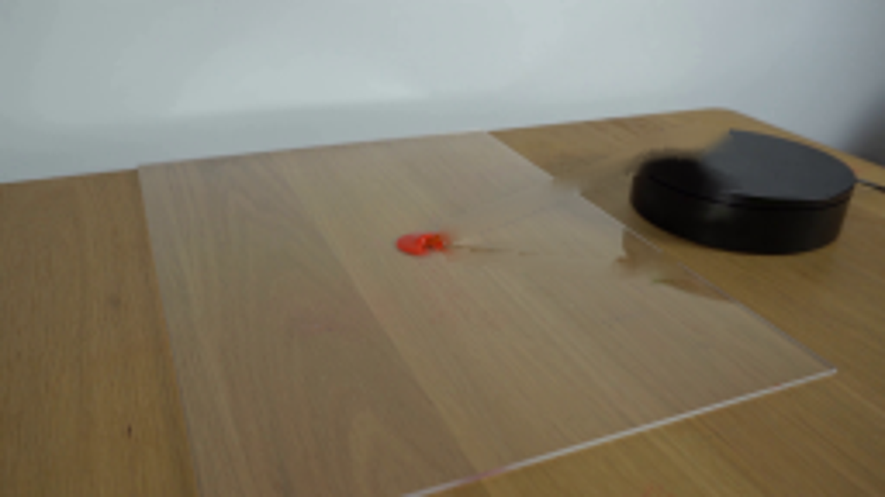
视觉工具实际返回图片 7

视觉工具实际返回图片 8
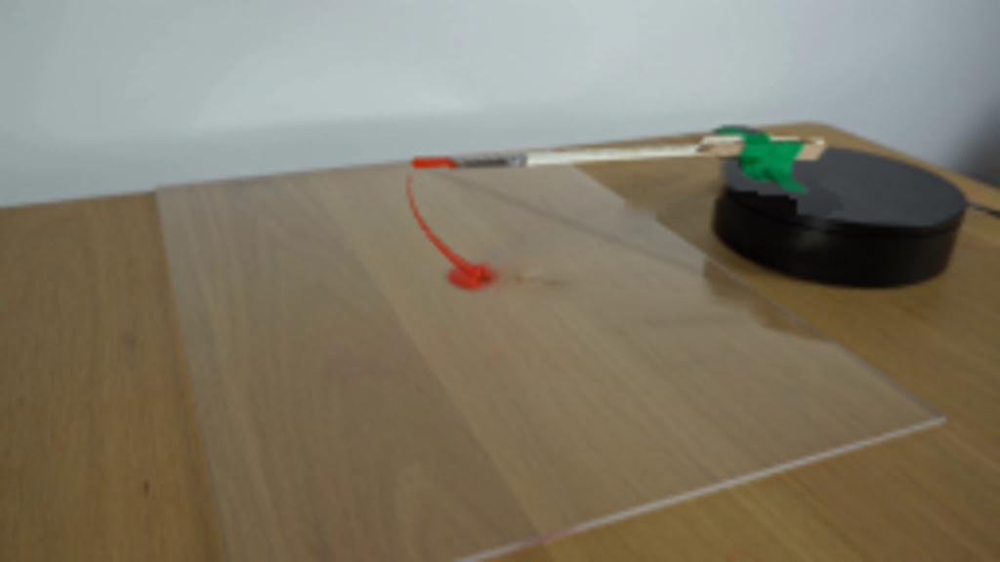
视觉工具实际返回图片 9
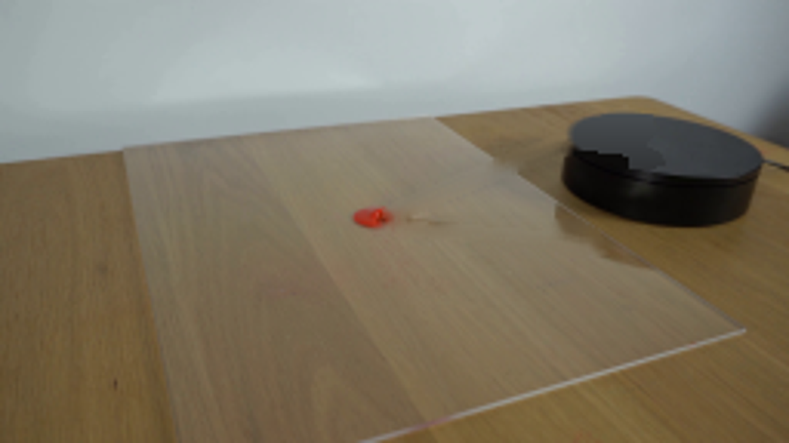
视觉工具实际返回图片 10
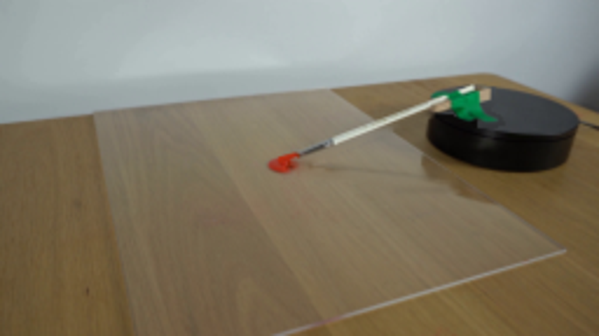
视觉工具实际返回图片 11
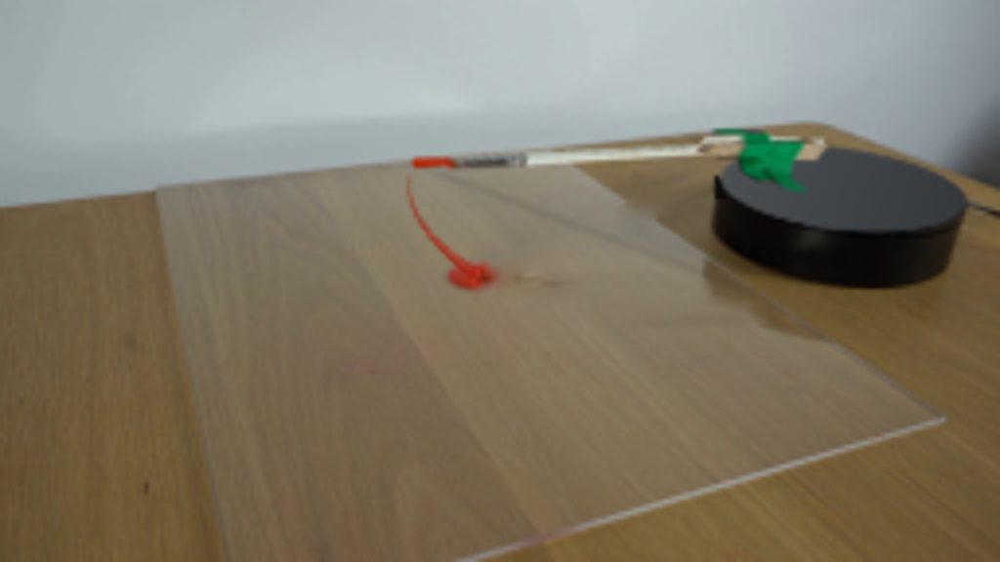
保存候选 4 份；完成命令 15 次；可验证图片返回 11 张。原始 API 响应与完整日志保留在本地。